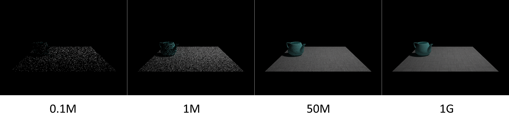
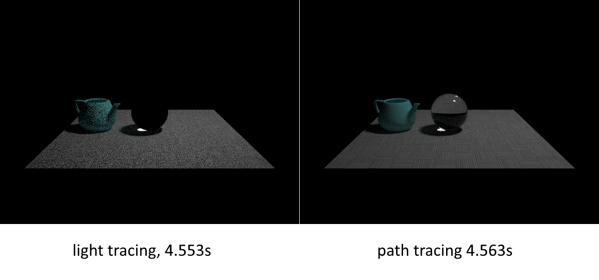

传统的path tracing算法从摄像机镜头向外发射射线，并不断散射、寻找光源；与之相对地，我们也可以从光源向外发射射线，并不断散射，寻找镜头。这样的算法被称作“light tracing/particle tracing”，本文将简单地介绍其原理。在这之前要声明一下，这算法基本没什么应用，最多拿来检验一下自己对光线传播理论的理解。
Importance Propagation
我们用来做path tracing的理论基础一般是所谓的rendering equation和measurement equation。非volumetric的rendering equation长这样：
其中是场景中从点向方向传播的辐射亮度（radiance），是点的自发光，表示整个单位球面对应的立体角，是BSDF，是点的法线。一些基本概念在这里就不再解释了，总之这个方程告诉了我们如何求在场景中任意一点朝任意一个方向观察到的亮度。
另一个方程measurement equation对许多人来说要陌生一些，长这样：
其中是像素的值，是摄像机传感器上的某点，表示点对来自方向的radiance产生的响应强度（就是用来把radiance转换成颜色的映射），则是用来重建像素的filter（参见此文）。这里我写出的形式可能和其他一些文献给出的形式不同，比如把pbrt里的一个项塞到里了，这不会影响算法的正确性。不得不说measurement equation对理解path tracing来说是比较鸡肋的，即使不显式借助于它也能写出正确的渲染器。但是要反过来做light tracing，也就是要以光源为起点建立以摄像机传感器为终点的路径时，就比较重要了。
现在我们理想化地在场景中某点放置一小束朝向方向的光，如果这束光恰好朝向传感器，那么它的radiance乘上传感器上对应点的，就是它让点产生的直接响应。而如果这束光没有照射到传感器，那么它也会在场景中的物体间散射，并有可能在多次散射后击中传感器，让其产生间接响应。由此可见，“响应”可以定义在场景中的每个点和方向上，表示此处的光源对摄像机传感器的影响有多大。我们把“响应比”记作，其含义是一小束光源对传感器上的点会造成的响应与的比值。这样一来，下述积分可以求出传感器上的点对整个场景中的光源产生的响应：
而也就可以从measurement equation变形出来了：
早在超过20年前，学界就给“响应比”起了个名字——importance function，并且指出间的关系与间的关系非常相似，按下面的规律传播：
其中是从出发沿着方向与场景的第一个交点，是BSDF的伴随（adjoint）形式（具体可以参考Veach大佬的thesis）。正如光源的充当了所有值的根本来源一样，充当了值的来源，也就是说我们可以用和路径追踪相似的方式来采样路径，只不过是以光源上的点为起点、以传感器为最终目标。
Light Tracing
至此，light tracing算法似乎已经可以按上一节中给出的计算式以及的传播方程来编写了，唯一剩下的问题在于——对一条从光源出发的路径，我们无法规定它最后会落到sensor上的哪一点，也就是说我们不能像path tracing那样想在film上的哪个位置采样就在那个位置采样。
假设我们一共从以光源为起点采样了条路径，分别记作，现以为基础定义路径空间上的扩展滤波函数，使得它适用于所有路径：
基于此，可以将measurement equation改写到路径空间上：
其中是路径的throughput，也就是路径起点处的，乘上路径上所有的项、BSDF以及最后的等（那些没落到传感器上有效区域的路径的throughput当然就是0了）。据此，的蒙特卡洛估计量为：
其中表示采样路径的概率密度函数。这就给出了light tracing的算法流程：
for i = 1 to N
construct path Xi from light source to camera
for j in all pixels
I[j] += (1 / N) * T(Xi) * fj'(Xi) / p(Xi)
实现效果
实现时有一些细节需要注意，比如：
- 一般在构造路径时都是用BSDF来采样，但在使用像小孔摄像机这样的里含有函数的摄像机模型时，路径中的最后一段必须在摄像机上采样，否则什么也看不见。
- 必须仔细构造像素颜色与的关系，才能保证图像反映的是radiance，而不是其他的某种被错误放缩的量。我的考虑是：将在sensor上归一化，并在最后的图像上乘个总像素数。
总的来说，我感觉light tracing的思想很简单，正确实现起来却比path tracing费力多了。下面看看效果：

好像还不错？等等，我们和mis path tracing对比一下，虽然有实现水平的干扰，不过结果还是很明确的：

收敛得是真的很慢——正如许多文献所说，这算法没什么用……也就渲染caustic的时候比path tracing好些：

注意到上图中light tracing画出来的玻璃球完全是黑的，这是因为玻璃本身的BSDF是分布，而小孔摄像机模型的也是分布，采样任何一个分布都不能在二者间得到一条有效路径，也就没法画出来了。